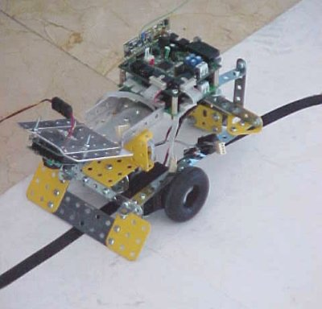
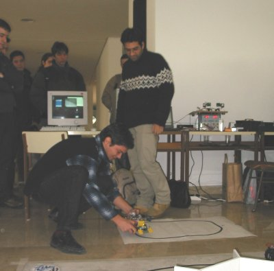
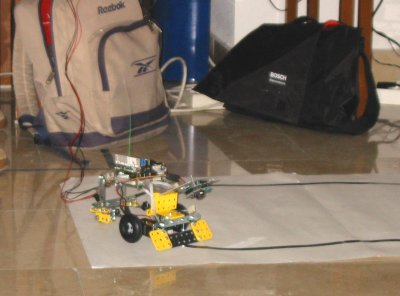

LA HISTORIA DE CORTOCIRCUITO
La historia de Cortocircuito es muy larga... Inicialmente, fue construido para participar en
las pruebas de la ChampionBot, por ello se le dotó de sensores de CNY70 para detectar líneas
en el suelo, un sensor Sharp para detectar obstáculos (a otros robots más bien) y receptores de
infrarrojos para la detección de balizas. Sin embargo, todo el trabajo invertido en él se fue
al "traste" cuando por razones desconocidas, los circuitos de potencia de los motores (L293) se
empeñaron en "estallar" durante el desarrollo del software para la prueba del zorrobot. Todavía
no sabemos el porqué, pero la cuestión es que al final, decidimos no llevarlo.
Durante el desarrollo de la prueba libre, donde Bartolo iba a ser la "estrella", nos dimos
cuenta de que debido a la dificultad de su control, iba a ser bastante complicado conseguir
nuestro objetivo. Entonces, la elección fue clara, aprovechar a Cortocircuito para esta prueba.
LA PRUEBA LIBRE
Algunas semanas antes de la ChampionBot, en el CRM habíamos empezado a trabajar en temas
de visión artificial. Se trataba de cosas muy sencillas pero nos dimos cuenta de que existía
la posibilidad de que con ayuda de un ordenador, un robot pudiera seguir una línea negra (se
trataba de distinguir simplemente si blanco o negro).
EL DESARROLLO
Comenzamos conectando una pequeña cámara a un ordenador y capturando imagenes para procesarlas
posteriormente. Se trataba de distinguir una línea negra en un fondo blanco, donde la diferencia
entre pixels es bastante evidente. Las pruebas demostraron que lo que nosotros pensábamos que
era blanco no era tan blanco (por eso los anuncios de detergentes nos "dan la paliza" con lo
del "blanco más blanco") y que lo negro tampoco era tan negro. Se trataba pues de establecer
umbrales y a partir de los mismos aceptar que algo era blanco o negro (cualquier otro color se
consideraba negro también). Con estos umbrales podíamos solventar el problema de que hubiese
demasiada luz, o cualquier otro efecto de luz que pudiera ocurrir durante la prueba (es muy
conocido este problema entre los que usan los CNY70 para detectar blanco y negro, donde la
solución es usar conversores A/D y establecer umbrales).

Imagen de Cortocircuito. Se aprecian la cámara, el cable que va al PC y el módulo de
radio.
Una vez terminamos de probar el software del PC, solo necesitábamos establecer el sistema
de envío de las imágenes al PC y las órdenes adecuadas al robot. Para la transmisión de imagen
teníamos pensado utilizar un módulo de transmisión radio, ya muy extendidos y usados, de bajo
coste y montaje sencillo, pero el tiempo se echo encima y al final tuvimos que usar un cable.
En cuanto al envío de las órdenes al PC, aunque ya era factible el uso de un cable, decidimos
seguir con la idea de usar transmisión radio y utilizamos nuestro protocolo de comunicación. De
este modo, y ya en el futuro, solo sería necesario incorporar el módulo de transmisión de
video y el sistema sería completamente "wireless".
Las primeras pruebas fueron muy buenas, aunque teníamos que controlar que el robot se moviera
a la velocidad justa para no perderse de la línea, sobre todo en los giros. Pero todo fue
perfecto.
EL DÍA DE LA PRUEBA
Tras las pruebas realizadas, estábamos convencidos de que funcionaría correctamente. Lo primero
que hicimos fue explicar como funciaba el software y todo el mecanismo de comunicación para
posteriormente colocar a Cortocircuito sobre el "circuito".

Iván colocando a Cortocircuito mientras Charli explica su funcionamiento.
Como el jurado estaba muy atento, y el circuito parecía demasiado sencillo, nos propusieron
poner a cortocircuito sobre el círculo de cinta negra de la prueba de las sillas. Incluso en
este caso, en el que la superficie era moqueta y además estaba bastante "sucia" (pisadas, suciedad,
etc.) el software fue capaz de establecer los umbrales adecuados para evitar que el robot se
confundiera en caso de que la línea coincidiese al lado de una pisada, etc. Lo cierto es que
fue un éxito rotundo.

Cortocircuito siguiendo el recorrido de la prueba.
Para culminar la prueba, se nos ocurrió probar que Cortocircuito apuntará con su cámara
hacia adelante en vez de hacia el suelo. El resultado fue que era capaz de seguir a cualquier
persona que tuviese delante, porque al generar los umbrales, el sistema omitía el fondo y solo
la que estaba más cerca, y que por tanto le ofrecía un "constraste más oscuro", era visible. El
público apreció el detalle y correspondió la escena (Cortocircuito perseguía a Iván, obviamente,
despacito) con risas y aplausos. Aquello parecía un espectáculo del circo ;P
RESULTADO
Nuestro objetivo no era competir por un premio, y la resolución del jurado, de que ambos
finalistas de la prueba libre compartiéramos el premio, nos pareció justa y acertada. Ambos
diseños estaban a la altura de las expectativas. Esto es un claro ejemplo de que los importante
es vivir la experiencia y ver que la gente aprecia tu trabajo e incluso, puede que hasta
consigas que les interese hasta tal punto que decidan participar, objetivo principal de nuestra
Asociación.
Esta disponible un vídeo de la prueba.